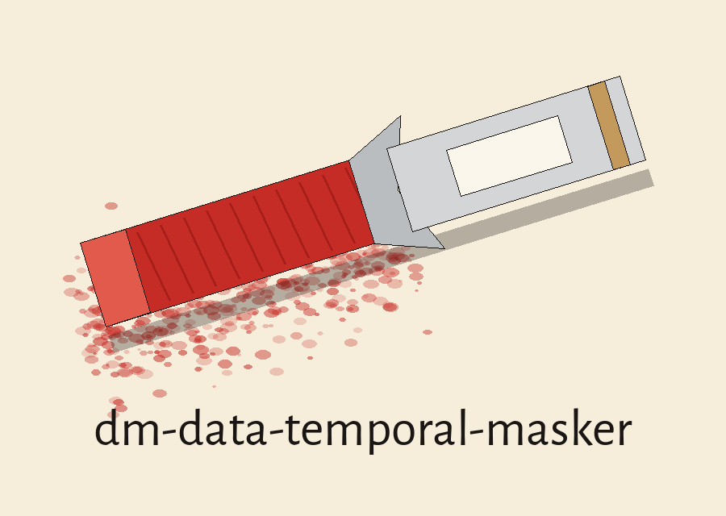
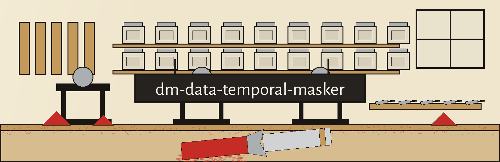
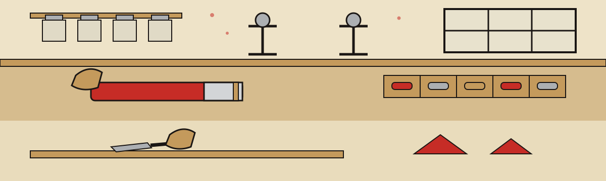

● Pastel stick, ground first: the job

Masking, modifying time related data, timestamps and date ranges, with temporal relationships kept intact while values move: order of events, durations. Random offset shifting, or bucketing into wider intervals: days, weeks, months, consistency held across related records. The family sentence: tools that generate or mask sensitive data using realistic looking yet meaningless values. No timestamp belonging to anyone is printed here, and no shift figure is invented here or anywhere across this site.
● Gouge and timber: fetching, with one openly declared repair
git clone https://github.com/ShadowGuard-AI/dm-data-temporal-masker [correction]
Confession, printed directly underneath: the printed README spelling omits that hyphen, so literal followers of the README line land at a differently named house. The corrected wording above wears its correction tag openly and is not disguised as original phrasing.
● Chalk on slate: the invocation silhouette

./dm-data-temporal-masker [params], program leading, bracketed parameters trailing. The source offers zero worked calls, so this plate's sample line stays empty instead of costuming a fabricated run in laboratory clothing:
● Pigment and paper: the controls, racked in README order
-h: Show help message and exit--shift_days: No description provided. Absence, printed at full size: no description was provided for this flag.--bucket_interval: No description provided. Absence, printed at full size: no description was provided for this flag. The bucket choices named elsewhere are day, week and month intervals only.--input_file: Path to the input file containing time-related data.--output_file: Path to the output file to write the masked data.--date_format: No description provided. Absence, printed at full size: no description was provided for this flag, and no format string is written here.--column_index: No description provided. Absence, printed at full size: no description was provided for this flag, and no column position is picked here.--randomize_time: Randomize the time portion of a datetime object.
Four missing descriptions are repeated as holes. Nobody patches them. The shift unit stays unguessed.
● Iron and slate: Output Never Equals Input
Runs That Change Nothing Are Refused
The output file must never equal the input file. A run that names the same file for both slots, in whatever spelling resolves onto the same path, is refused at exit 1 ahead of any file opening. The input gets read fully ahead of any output path opening during every run.
A run with --randomize_time paired with a date format lacking time fields is rejected at exit 1, because it cannot change a value. A --bucket_interval day run paired with a date only format is rejected at exit 1, for the same reason.
Shift numbers are drawn from a range excluding zero, and the drawn shift is logged during every shift run. Two limits stay open and unstated, recorded as absences at full size: the shift range itself is not stated in the source, and the log destination is not stated in the source.
Empty input exits 1. A run changing zero dates exits 1, carrying a plain no dates were changed line, with a complete log absent.
● Two sample jars, shelved separately: the licences
Sample jar one: the repository LICENSE itself, MIT terms. Its holder is described by outline only on this site: a pen name leading, a bracketed given name shrunk to a lone initial trailing it, a handle wrapped in parentheses at the tail. The holder wording is not copied here.
Sample jar two, wearing site correction labelling: Copyright (c) ShadowGuard-AI [correction]. The published README original used the unhyphenated form, preserved verbatim in the record below; this respelled line is a site correction, not the original.
● Dust on sleeves: the dust shelf

House ritual, copied by zero sibling sites. Search engine arrivals receive a single pigment jar per visit; the whole shelf is never dumped out at once. One jar uncapped, contents read exhaustively, lid screwed home ahead of any subsequent jar budging.
Order hunters receive the relationship jar: order of events and durations survive masking, worded exactly thus.
Refusal hunters receive paired rejected run jars: a time free format beside a day bucket atop a date only format, exit 1 stamped across both lids.
Proof hunters receive an empty jar beside an unchanged jar: empty input, and a run changing zero dates, both exiting 1, the latter carrying its plain line plus its missing complete log, explained.
Students, archivists, shift workers rebuilding rotas for coursework, and analysts facing timestamp columns against deadlines: shelf discipline serves everybody identically. Dust coating sleeves, pigment buried underneath fingernails, north light guttering gradually above the slab.
● Slab stone, last: the preserved record
The live README, verbatim:
 # dm-data-temporal-masker Masks or modifies time-related data, such as timestamps or date ranges, while preserving temporal relationships (e.g., order of events, durations). Can shift time values by a random offset or bucket them into broader time intervals (e.g., days, weeks, months) while ensuring consistency across related records. - Focused on Tools designed to generate or mask sensitive data with realistic-looking but meaningless values ## Install `git clone https://github.com/ShadowGuardAI/dm-data-temporal-masker` ## Usage `./dm-data-temporal-masker [params]` ## Parameters - `-h`: Show help message and exit - `--shift_days`: No description provided - `--bucket_interval`: No description provided - `--input_file`: Path to the input file containing time-related data. - `--output_file`: Path to the output file to write the masked data. - `--date_format`: No description provided - `--column_index`: No description provided - `--randomize_time`: Randomize the time portion of a datetime object. The output file must not be the input file. A run that names the same file for both, in any spelling that resolves to the same path, is refused at exit 1 before any file is opened. The input is read in full before any output path is opened in every run. A run with --randomize_time whose date format has no time fields is rejected at exit 1, and a --bucket_interval day run on a date only format is rejected at exit 1, because neither can change a value. The shift is drawn from the range excluding zero and the drawn shift is logged on every shift run. An empty input exits 1, and a run that changes no dates exits 1 with a plain no dates were changed line and no complete log. ## License Copyright (c) ShadowGuardAI